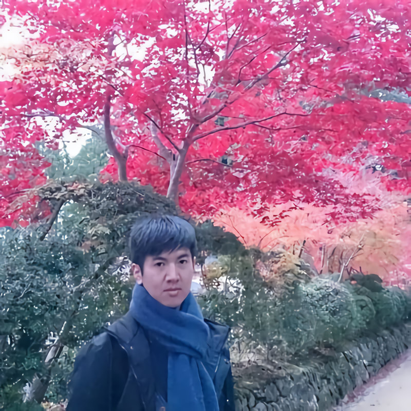
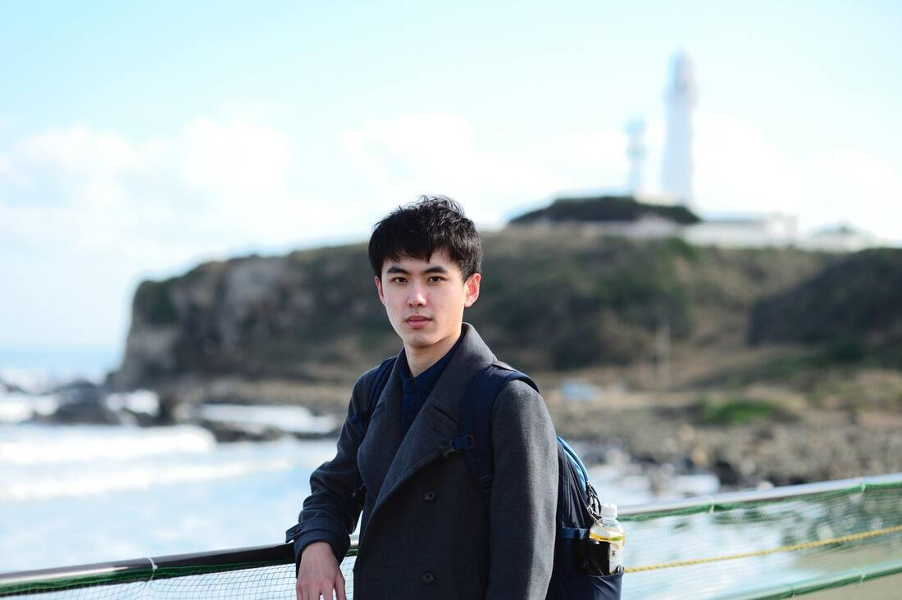

<section class="section" style="border-bottom:none;">
	<div class="container">
		<div class="section-head">
			<span class="eyebrow">Interviews</span>
			<h2>學長姐的訪談</h2>
		</div>

		<div class="page-prose">
			
			<h3>劉宗翰</h3>
			<p style="color:var(--color-muted);">現任東京大學助教，於校業務包含，教授專業課程、帶學生實驗、指導研究生進行研究、及協助國際交流相關事務。</p>
			<p>2017 年畢業於交大應化博士班的劉宗翰，現於關西學院大學理工學部擔任助教職位，從學生時代就多次接待參訪的日本學生、到過大阪大學交換學生、也於京都的日本藥廠參加短期實習，是個勇於追求自己目標的人。</p>
			<p>劉宗翰從升高中的暑假開始學習日文，大一時通過日語能力檢定 N3；大三時通過 N2；大四時，被熱心且對日文極有熱情的學弟邀請一起參加日語辯論比賽。在チームたけのこ的日子，他代表交大參加了日語辯論比賽，初次參賽就取得一般論題首獎的佳績。</p>
			<p>升上研究所後，他轉換身分開始協助日語圓桌活動、朗讀比賽等多項校內外競賽的進行，劉宗翰在外語能力的善用與參賽協辦的投入上一直不遺餘力，種種體驗也豐富了他在研究之餘的課外活動。</p>
			<p>在博士班畢業之際，他申請到科技部的「赴海外博士後研究」計畫，隨即前往大阪大學進行光譜相關研究，新的長期海外生活與挑戰就此展開。在擔任招聘研究員的期間，得知關西學院大學正在尋找化學背景，可進行英語授課、並有日文能力能獨立處理行政事務的合適人選。藉由認識的指導老師引薦，加上自身努力，他最終通過面試，取得關西學院大學理工學部助教的職位。如今，在校教授專業課程、帶領實驗、指導研究生以及協助國際交流等相關事務，是他的日常。</p>
			<p>回想在日面試的過程中，劉宗翰認為難點在於，面試時一方面要用日文與面試官溝通，另一方面還要用英文試教專業課程，可說是外語能力與專業技能合體之高度考核，因此面試前他努力準備，把可能會被問到的題目都先用日文寫下來多次覆誦。他也說，緊張是一定會的，因此更要多多練習慢慢習慣，終能順利克服。</p>
			<p>劉宗翰想要留給學弟妹們這樣一段話：「趁著還是學生的時候，把握各種機會努力學習。除了自身專業外，也須積極參與活動培養人脈，這些經驗都會在無形中變成自己獨特的優勢。」</p>
			<div style="clear:both;"></div>
		</div>

		<div class="page-prose" style="margin-top:48px;padding-top:32px;border-top:1px solid var(--color-line);">
			
			<h3>張浩銘</h3>
			<p style="color:var(--color-muted);">現於日本民營鐵路公司「JR東日本」工作，工作業務包含工程工期管理、工程流程規劃、現場監督等現場業務。</p>
			<p>2019 年大學部畢業的張浩銘，目前任職於東日本旅客鐵道株式會社。</p>
			<p>在交大的四年半中，張浩銘有一年半的時間是在チームたけのこ度過的。由於學習過程中逐漸體會到寫作、口說與聽力等能力，若僅憑個人努力，很難有明顯提升。也因此，他萌發了尋找課外日語讀書會的念頭。</p>
			<p>大四時，他收到一封來自チームたけのこ的九州大學日語辯論營比賽消息，以此為契機，他開始參與たけのこ的日語學習活動，從チームたけのこ平日的讀書會，到大型比賽，例如九州大學的辯論講座、校外的日語簡報比賽、交通大學日語朗讀比賽等都有參加。</p>
			<p>透過社團活動與其他成員大量的口說練習，使他得以跳脫長久以來的學習困境，讓先前輸入腦中的知識能夠有靈活運用的機會。比起單一方向永無止境的死記硬背，經由與他人溝通練習，接觸、習慣並應用大量的新舊詞彙則顯得十分有效。在思考如何構成一篇能夠讓讀者迅速理解的文章的同時，也讓自己的日語思維更加的清晰且明確。</p>
			<p>「我既結識了志同道合的朋友，也在一連串的競賽當中強化了自身日語能力，與站在人群之前的堅強自信。不可否認的是，チームたけのこ是交大校內含金量數一數二的校內課外學習團體。」這是張浩銘對たけのこ的評價。</p>
			<p>除了對日語有著濃厚興趣外，張浩銘也是一個鐵道迷，一直以來都是交大鐵道會成員的他，在選擇未來職涯時，毅然決定要將自己對日語、鐵道的興趣、與本科電機的專業結合，期許自己能夠走上連結日本與台灣、連結世界與日本的道路。</p>
			<p>畢業前夕，チームたけのこ的上條老師向他介紹了一項日本的海外人才招募計畫，他決定抓住這個機會，到日本工作。為了前往東京進行面試，他在上條老師的指導下，準備各種日語面試內容及對應的書面資料。與台灣不同的是，日本在大學部就會有提交畢業論文的制度。為了改善自己的劣勢，他將大學的電機專題報告，依照論文格式翻譯成英文版本，同時再考慮到面試提問的需求，他又額外準備了日文版的口頭說明講稿。層層努力最終也得到一個好的成果，6 間公司的面試之中獲得其中 3 間公司的內定資格，而這一切，正歸功於他在面試之前做的諸多準備。</p>
			<p>現在，他在日本最大的民營鐵路公司──JR東日本公司工作。日常的業務以工程工期管理、工程流程規劃、現場監督等現場業務為主，近期參與的案件則有新幹線延伸案車站間光纖通訊網路更新工程、無線列車控制系統更新工程等。</p>
			<p>疫情爆發後，入境日本的外國觀光旅客減少，也導致公司業績呈現大幅赤字。雖然個人收入有跟著受到牽連，但由於公司給予員工的福利十分優渥，在生活層面並沒有太大困難，尤其公司提供的交通補助，讓喜愛鐵道旅行的張浩銘得以暢遊日本各地。</p>
			<p>最後，張浩銘留給了學弟妹們這樣一段話：「除了課內的知識之外，也鼓勵學弟妹能夠在課外鑽研自己有興趣的外語或其他領域，尤其是在這個講求通才的國際競爭時代。或許，你在課內的成績並不理想，但也不應該受到自身科系的侷限，試著走出門與各式各樣的人交流，與有相同愛好的人一同鑽研，嘗試去培養一個與別人不同的語言能力，或許在不遠的將來你也能邁向另一個嶄新的世界。永遠記得，懷有憧憬並不是壞事，然而你應該堅持到底並且勿忘初衷。」</p>
			<div style="clear:both;"></div>
		</div>

		<div class="page-prose" style="margin-top:48px;padding-top:32px;border-top:1px solid var(--color-line);">
			
			<h3>蕭百晴</h3>
			<p style="color:var(--color-muted);">現就職於日企 WACOM。</p>
			<p>2013 年大學部畢業，現在就職於日企 WACOM 的蕭百晴，在提到現在生活與台灣生活的不同時，笑著說到因為都是聽著周遭日本人說話方式，把詞彙文法自然學起來，跟從課本學習的感覺很不同。</p>
			<p>在剛進入チームたけのこ時，蕭百晴對日語就有一定了解。能夠與他人進行簡單對話，能在打工的地方與日本客人溝通，也能在家族一起日本旅遊時用日語與當地人交流。</p>
			<p>大三時，以辯論比賽為契機，蕭百晴被邀加入チームたけのこ。對於進入たけのこ是否有任何地方感到挑戰性，蕭百晴認為是自己在加入たけのこ，不太會有閱讀日文新聞報導或專業知識資料的機會，因此在剛加入時花上不少適應。其後於暑期參加九州大學辯論活動，在該次活動中，蕭百晴與日本、韓國的學生們一起討論辯論主題、一起辯駁，並於大四時擔任辯論比賽第一反駁，也是在這次辯論比賽，蕭百晴作為優秀第一反駁受獎。回憶起這整段經歷，蕭百晴認為這段時光除了讓她提升到日語聽說能力外，和不同科系不同經歷的隊員合作，也讓她學習到不同領域的知識與觀點。</p>
			<p>在交大的最後一年，蕭百晴將目光著眼於 TOSHIBA 的海外徵才，認為這是個可以同時發揮本科專業能力和外語能力的機會，決定參加面試。這次與 TOSHIBA 的面試是全英文的，花了不少心思準備。</p>
			<p>進入公司初期則是在全日文的環境下學習專門知識，因為都是陌生的技術用語，也讓蕭百晴投注不少時間於其中。在當時主管的要求下，她開始試著負責用日文紀錄會議紀錄，等會議結束後她會再與前輩確認一次會議內容，這段經驗讓她在日文溝通與專業知識有了更深的理解。</p>
			<p>蕭百晴其後再一次轉往日企 WACOM 就職。不同於海外徵才，在日本的轉職基本上都是日文面試，也因為她是外國人的關係，經常被問到會任職多久、以及會在日本待多久這類問題。</p>
			<p>現在，她已經習慣於在日本的生活。她也笑著提到自己對日本搭車通勤半小時、經常需要走路的生活感到熟悉，甚至回台灣要騎機車時還要先想一下操作方式。</p>
			<div style="clear:both;"></div>
		</div>
	</div>
</section>
